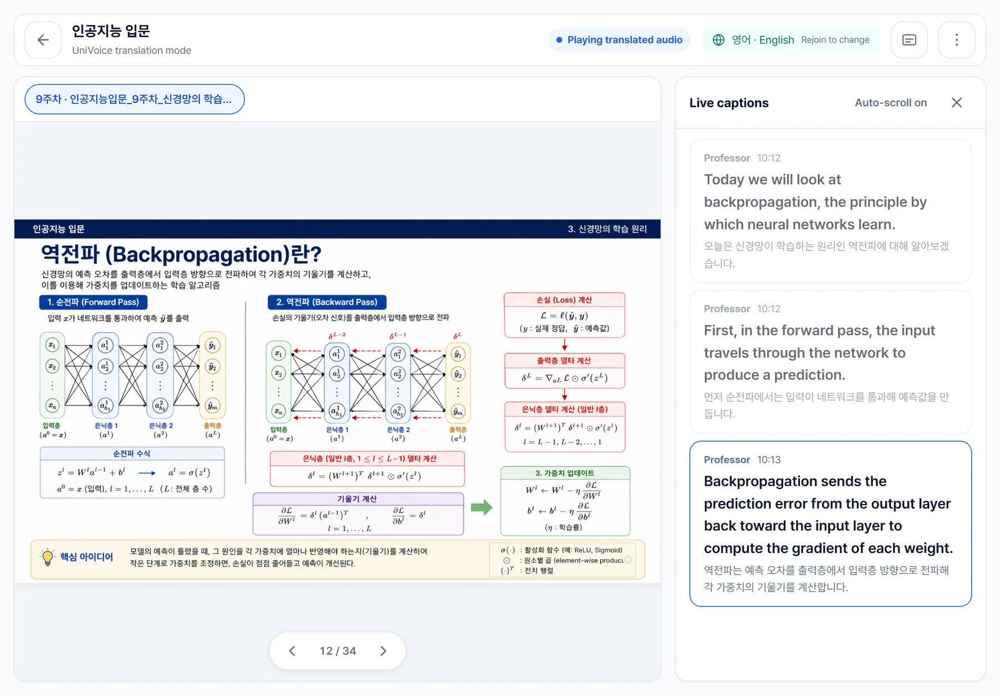
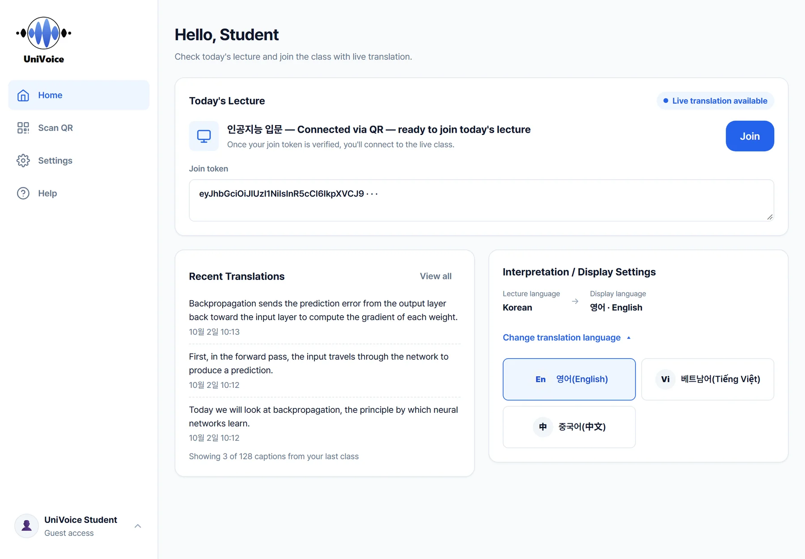
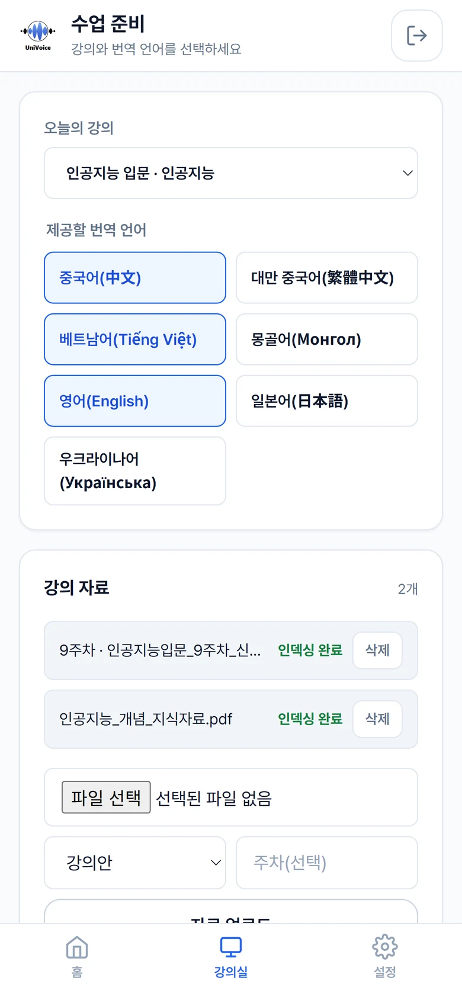
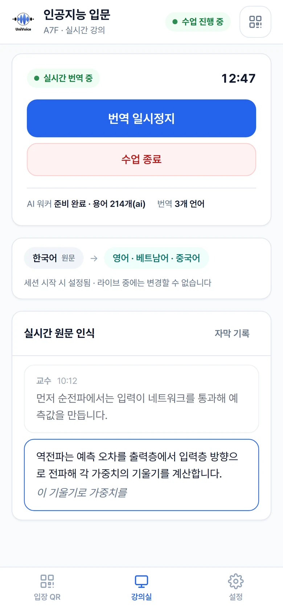
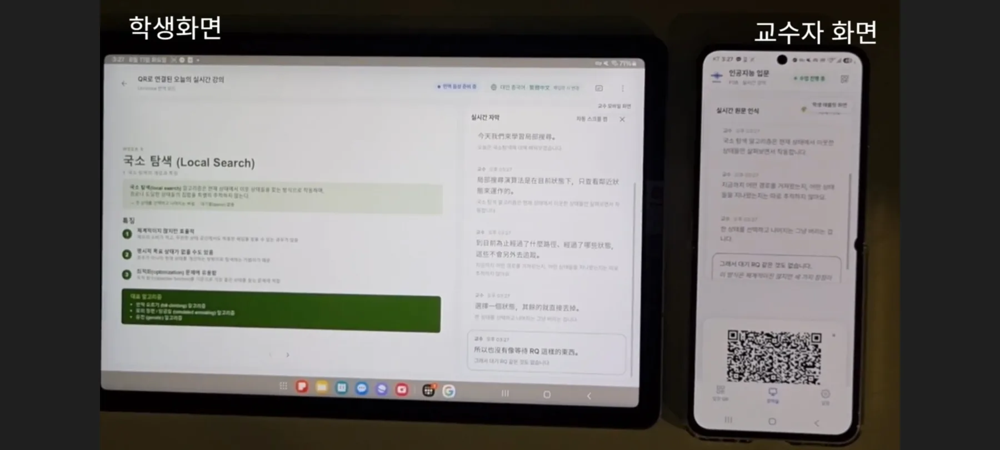
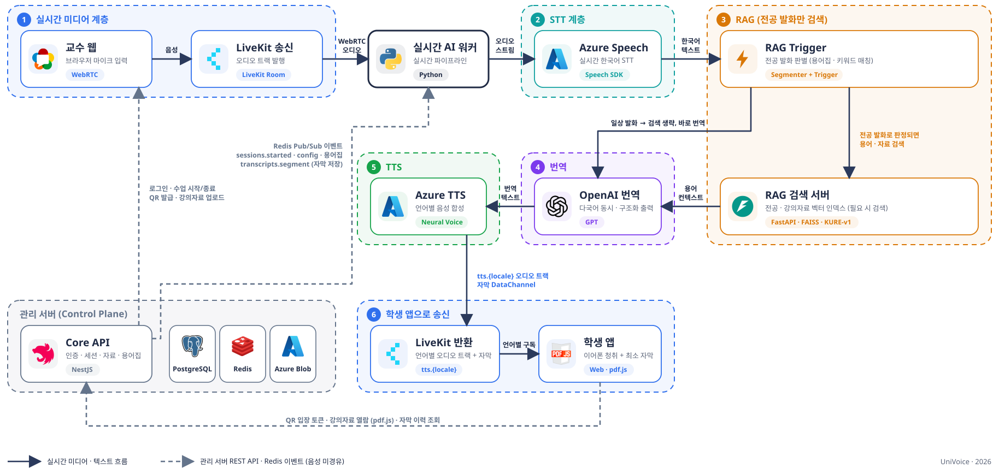

실시간 자막 · 음성
교수자의 강의를 실시간으로 인식하고 번역해 학생의 언어로 자막과 음성을 동시에 제공합니다.
발화가 끝난 뒤 자막까지 p50 1.95초
01배경
유학생 유치가 곧 학업 성공을 뜻하지는 않습니다. 한국어로 진행되는 전공 강의를 따라가지 못해 학업 부적응과 중도 이탈로 이어지는 일이 반복되고 있습니다.
정부는 Study Korea 300K로 2027년까지 유학생 30만 명 유치를 추진하고 있습니다. 숫자는 이미 목표에 닿았지만 학업을 지원하는 인프라는 그대로입니다.
2026년 국내 외국인 유학생
307,464명
“교수님이 슬라이드에 없는 내용을 말할 때 이해하기 어렵고, 전공 용어는 알아듣기 힘들어요.”
“지금 쓰는 번역 서비스로 수업 후에 복습하면 시간을 많이 쓰고 불편합니다.”
“수업 녹음을 들어도 완전히 이해되지 않고 시간이 많이 필요해서 불편해요.”
강의는 말의 내용만으로 이루어지지 않습니다. 강조와 속도, 판서와 손짓, 칠판과 학생 반응이 한꺼번에 겹쳐 전달됩니다. 녹음은 그중 한 층만 남깁니다.
일상 한국어를 구사하는 유학생도 전문 용어와 약어, 수식, 슬라이드 설명이 뒤섞인 전공 강의를 그 속도로 따라가는 데서 막힙니다. 개인의 노력 문제가 아니라 지원 인프라의 문제입니다.
서울대학교 다양성위원회, 「서울대학교 외국인 학생 지원 방안 연구」(2018)
| 강의 정보의 층 | 녹음 | 녹화 | UniVoice |
|---|---|---|---|
| 상황칠판 · 실물 · 학생 반응 | 복원 안 됨 | 복원 안 됨 | 실시간으로 전달 |
| 신체언어판서 · 지목 · 손짓 | 복원 안 됨 | 복원 안 됨 | 실시간으로 전달 |
| 준언어강조 · 속도 · 억양 | 복원 안 됨 | 일부 복원 | 실시간으로 전달 |
| 언어발화 내용 | 일부 복원 | 일부 복원 | 실시간으로 전달 |
단순 번역이 아니라 실시간 · 전공 문맥 · 수업 흐름 유지를 함께 지원하는 강의 이해 인프라가 필요합니다.
02서비스
교수자에게는 수업 시작 버튼, 학생에게는 언어 선택 버튼만 보입니다. 기존 수업 방식을 바꾸지 않습니다.
교수자
휴대폰으로 수업을 시작하고 강의자료를 올리면 준비가 끝납니다. 별도 장비 없이 휴대폰 마이크로 강의합니다.
수업 시작UniVoice
음성을 인식하고, 전공 발화이면 강의자료와 용어집을 찾아 문맥을 보정한 뒤 여러 언어로 동시에 번역합니다.
인식 · 검색 · 번역 · 음성 합성학생
QR로 입장해 언어를 고르면 번역 자막과 음성이 강의자료와 함께 도착합니다. 자막은 수업 후에도 남습니다.
언어 선택교수자의 강의를 실시간으로 인식하고 번역해 학생의 언어로 자막과 음성을 동시에 제공합니다.
발화가 끝난 뒤 자막까지 p50 1.95초
강의자료와 전공 용어를 검색해 발화의 문맥을 파악하고 번역을 보정합니다.
전공 RAG와 강의자료 RAG를 함께 사용
실시간으로 만들어진 번역 자막을 강의 기록으로 저장합니다. 수업이 끝난 뒤 다시 볼 수 있습니다.
번역문과 한국어 원문을 함께 보관
하나의 교수자 음성을 여러 언어로 동시에 번역해 학생마다 선택한 언어로 제공합니다.
같은 언어 학생이 늘어도 번역은 언어당 한 번
03화면
실제 서비스 화면입니다. 교수자와 학생 모두 설명 없이 바로 쓸 수 있도록 필요한 것만 남겼습니다.

학생 · 수업 화면
교수가 올린 자료를 넘겨 보면서 번역 자막과 음성을 함께 받습니다. 슬라이드와 발화를 연결하며 수업을 따라갈 수 있습니다.

학생 · 홈
강의실의 QR을 스캔하면 로그인 없이 바로 입장합니다. 번역 언어를 고르면 화면의 메뉴까지 그 언어로 바뀝니다.

교수자 · 수업 준비
올린 강의자료(PDF · PPT)는 자동으로 인덱싱되어 그 수업의 번역 문맥으로 쓰입니다.

교수자 · 수업 진행
인식된 원문과 번역 상태를 눈으로 확인하고, 일시정지와 종료, 학생 입장 QR을 한 화면에서 다룹니다.

04전공 특화
범용 번역기는 과목의 맥락을 모릅니다. UniVoice는 전공 기초 지식과 그날의 강의자료를 함께 찾아 번역에 반영합니다.
전공 기초 교재를 바탕으로 합니다. 전공별 인덱스를 분리해 운영합니다.
교수가 올린 PDF · PPT를 임베딩해 벡터 인덱스에 저장합니다.
두 검색 결과를 재정렬하고 병합해 번역 모델에 전달합니다.
모든 문장을 검색하면 느려집니다. 세 단계 게이트가 전공 발화만 골라내고, 일상 발화는 검색 없이 바로 번역합니다.
용어집 매칭으로 전공 발화인지 판별합니다.
음차 표기를 바로잡고 군말을 걷어내 검색 질의를 다듬습니다.
유사도가 0.50에 못 미치면 검색 결과를 쓰지 않습니다.
정규화
과목별 용어집을 음성 인식과 번역, 음성 합성에 공통으로 적용해 인식과 번역, 발음 품질을 함께 높입니다.
| 원칙 | 대상 | 예시 | 이유 |
|---|---|---|---|
| 번역 | 학생 언어로 옮겼을 때 뜻이 더 분명해지는 일반 전공어 | 미분 → derivative적분 → integral | 번역어가 모국어 이해를 직접 돕습니다. |
| 원어 유지 | 전공 표준 표기로 굳은 약어와 핵심 용어 | SGD ReLU softmax | 억지로 번역하면 교재, 수식, 코드의 표기와 어긋납니다. |
| 병기 | 번역어와 원어를 함께 보여야 혼동이 없는 다의어 | 정규화(regularization) | 어느 개념인지 원어로 확정합니다. |
05성능 검증
임베딩 모델 세 종(KURE · bge-m3 · OpenAI)을 비교해 한국어 교재 질의에 강한 KURE를 채택했고, 실제 수업 세션에서 지연을 측정했습니다.
RETRIEVAL R@1
0.958
AI 교재 신규 질의 24개
R@3는 1.000
ROUTER ACCURACY
96.7%
전공 발화 분류
비전공 발화 차단 100%
NORMALIZATION
+12.5%p
질의 정규화로 어려운 질의 세트
R@1 0.583 → 0.708
LATENCY P95
119ms
임베딩 p95
검색 p50 0.16ms · CPU 기준
1.95초p50
3.2초p95
수강이 가능한 수준의 실시간성을 실측으로 확인했습니다.
2.93초자막
3.87초번역 음성
실제 강의실에서는 자막이 발화 종료 후 약 3초, 번역 음성이 약 4초에 도착했습니다.
| 구간 | p50 | p95 | max | 설명 |
|---|---|---|---|---|
| STT 확정 | 890 | 986 | 1,205 | 발화 종료 → 인식 확정 (침묵 대기 + 인식 + 왕복) |
| 큐 대기 | 0 | 1,112 | 1,931 | 앞 문장 처리 중 대기 |
| 번역 | 985 | 1,551 | 3,873 | 번역 모델 호출 |
| E2E 자막 | 1,950 | 3,167 | 4,733 | 발화 종료 → 자막 발행 |
06사용자 검증
실제 유학생 참가자와 블라인드 비교 테스트를 진행했습니다. 참가자는 강의를 들으며 이해가 끊기는 순간을 표시하고, 끝난 직후 이해도와 통역 속도를 평가했습니다.
범용 번역보다 강의자료를 반영한 번역이 정확하다는 평가를 받았고, 이해도와 최종 선호에서 앞섰습니다.
음성 인식 오류가 번역 오류로 이어졌고, 음성 지연과 자막 불일치가 수업 흐름을 끊었습니다.
음성보다 자막을 더 많이 활용했고, 빠르게 사라지는 자막이 불편하다는 의견이 있었습니다.
이렇게 고쳤습니다번역 음성 지연 개선 · 스크롤형 실시간 자막 · 자막 기록 저장
“편하게 접속할 수 있어서 좋았어요.”
“멈춰서 찾아볼 필요 없이 그냥 계속 들었어요.”
07기술
음성을 처리하는 미디어 계층과 세션·권한·자료를 관리하는 Core API를 분리했습니다. 학생 수가 늘어도 안정적으로 확장됩니다.

LiveKit · WebRTC
교수 음성 수신, 언어별 오디오 트랙과 자막 채널Azure Speech
실시간 한국어 인식, 언어별 Neural TTSOpenAI GPT
여러 언어를 한 번에 번역, 구조화 출력FAISS · KURE-v1 · FastAPI
전공과 강의자료 벡터 인덱스Python · NestJS
PostgreSQL, Redis, Azure Blob StorageWeb · pdf.js
교수자 모바일, 학생 태블릿, 강의자료 뷰어08도입 · 계획
유학생 개인이 아니라 대학이 수업 단위로 도입하는 서비스입니다. 수업에 필요한 것은 교수자의 휴대폰과 학생의 기기뿐입니다.
핵심 파이프라인 구현 완료. 다중 접속과 지연 시간 안정화.
3~5개 과목에 적용. 용어집 관리와 오류 로그, 품질 대시보드 구축.
국제처와 학과에 학기 패키지 제안. 개인정보와 강의자료 보안 정책 수립.
관리자 대시보드, 학습관리시스템(LMS) 연동, 전공별 용어집 묶음 구축.
API와 SDK 설계, 온라인 강의 적용, 지원 언어 확대, 품질 자동 평가.